Building intelligent, event-driven architectures with Fabric Real-Time Intelligence
Grounding real-time intelligence in enterprise context
Retail cold-chain monitoring, end to end
Brian Bønk
Founder & MVP, ProBI
Fabric IQ half of the day · 4 hours · 6 modules
Module 08 · Kickoff
A retail chain with stores, customers, and freezers full of frozen goods.
We spend the next four hours building this — live, in your own workspace.
Fabric IQ Workshop · Module 08 — Set up & verify
2
Module 08 · Kickoff
Real-Time Intelligence
Eventstream, Eventhouse, Activator
Streaming freezer telemetry into the workspace
Fabric IQ
The semantic and agent layer on top of RTI
Same retail cold-chain data, same workspace
We're extending, not restarting.
Fabric IQ Workshop · Module 08 — Set up & verify
3
Module 08 · Kickoff
| Module | Topic | Theory / Lab |
|---|---|---|
| 09 | Fabric IQ architecture & why context matters | 10 / 15 min |
| 10 | Telemetry + semantic context, grounding signals | 15 / 25 min |
| 11 | Build ColdChainOntology — highest-value module | 15 / 30 min |
| 12 | Agents on top: ColdChainDataAgent, ColdChainOperationsAgent | 15 / 20 min |
| 13 | Prompting, trust, traceability — built-in buffer | 10 / 5 min |
| 14 | Wrap-up & resources | 10 min |
Fabric IQ Workshop · Module 08 — Set up & verify
4
Module 08 · Kickoff
You already played around with these items before lunch:
Fabric IQ doesn't replace any of this — it sits on top of it.
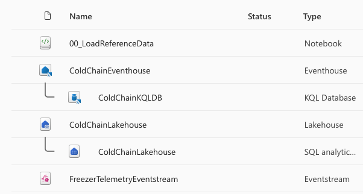
The Fabric IQ workspace after provisioning
Fabric IQ Workshop · Module 08 — Set up & verify
5
Fabric IQ Workshop · Module 08 — Set up & verify
6
Module 08 · Kickoff
Fabric IQ
On a P1 capacity
ColdChainLakehouse
Customers · Stores · Freezers
ColdChainEventhouse
KQL DB ColdChainKQLDB
FreezerTelemetryEventstream
created and ready for the generator
Module 08 · Kickoff
Fabric IQ Workshop · Module 08 — Set up & verify
7
Hands-on lab
35 minutes
Fabric IQ Workshop · Module 08 — Set up & verify
8
Module 09 · Topics 1–2
10 min theory · 15 min lab
By the end of this module you can
Topic 1
Think of it as the layer that turns "a table of numbers" into "a Freezer that belongs to a Store."
Fabric IQ Workshop · Module 09 — Architecture & Context
10
Topic 1
03
Data Agent · Operations Agent · Activator Ontology Rules — reason and act over the semantic layer (Module 12)
02
The ontology — ColdChainOntology: entities, properties, relationships, bound to the data layer with no copying (Module 11)
01
Lakehouse ColdChainLakehouse · Eventhouse ColdChainEventhouse — what RTI already built
Fabric IQ Workshop · Module 09 — Architecture & Context
11
Topic 1
Customer records, store master data, freezer specs
→ Lakehouse
Freezer temperature, door state
→ Eventstream → Eventhouse
Binds both, without moving either
Query and act through the ontology — never against raw tables directly
This is the same layering pattern as Microsoft's Digital Twin Builder tutorials — we're following a tested template, not inventing one.
Fabric IQ Workshop · Module 09 — Architecture & Context
12
Topic 2
Fabric IQ Workshop · Module 09 — Architecture & Context
13
Topic 2 · Case study
-9°C
source: sensor-4471
…is that bad?
-9°C
9°C above spec — door open or compressor fault
Fabric IQ Workshop · Module 09 — Architecture & Context
14
Same number
Fabric IQ Workshop · Module 09 — Architecture & Context
16
Topic 2
Spec: -18°C to -22°C
Alarming — act now
Spec: -5°C to -10°C
Perfectly normal
Topic 2
Get the static and live data ready for grounding
Build ColdChainOntology so "-9°C" always resolves to the right entity and meaning
Put agents on top that reason in business terms, not raw thresholds
Fabric IQ Workshop · Module 09 — Architecture & Context
17
Hands-on lab
15 minutes
Fabric IQ Workshop · Module 09 — Architecture & Context
18
Module 10 · Topics 3–4
15 min theory · 25 min lab
By the end of this module you can
Fabric IQ Workshop · Module 10 — Telemetry & Grounding
20
Topic 3
Temperature, door state, arriving every few seconds
Which freezer, which store, which customer base it serves
Neither ingredient alone is enough — this module gets both into the right shape.
Topic 3
Microsoft's official RTI tutorial establishes the template we're following:
Static contextual data (customers, stores, freezers) as CSVs
Into a Lakehouse (ColdChainLakehouse) as governed tables
Into the Eventhouse so it can be joined against live telemetry
The ontology (Module 11) binds the two together for querying
Adapted from: Digital Twin Builder RTI tutorial, parts 1–2.
Fabric IQ Workshop · Module 10 — Telemetry & Grounding
21
Topic 3
ColdChainLakehouse
| Table | Contents |
|---|---|
| Customers | Customer records |
| Stores | Store master data |
| Freezers | Model, Capacity, InstallDate — nameplate specs |
This is static context — it changes rarely, if ever, during the day. The "what should be true" half of grounding.
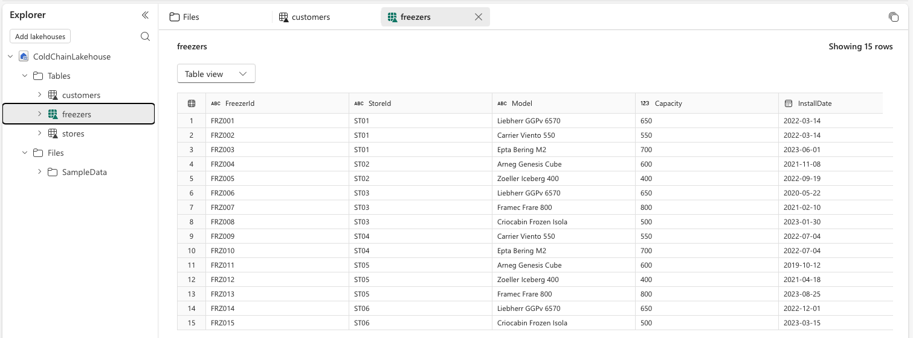
Freezers table in ColdChainLakehouse
Fabric IQ Workshop · Module 10 — Telemetry & Grounding
22
Topic 3
ColdChainEventhouse → ColdChainKQLDB
| Table | Contents |
|---|---|
| FreezerTelemetryRaw | Every event exactly as ingested |
| FreezerTelemetryEnriched | Cleaned/derived — TemperatureC, DoorOpen |
This is live signal — it changes every few seconds. The "what is actually happening" half of grounding.
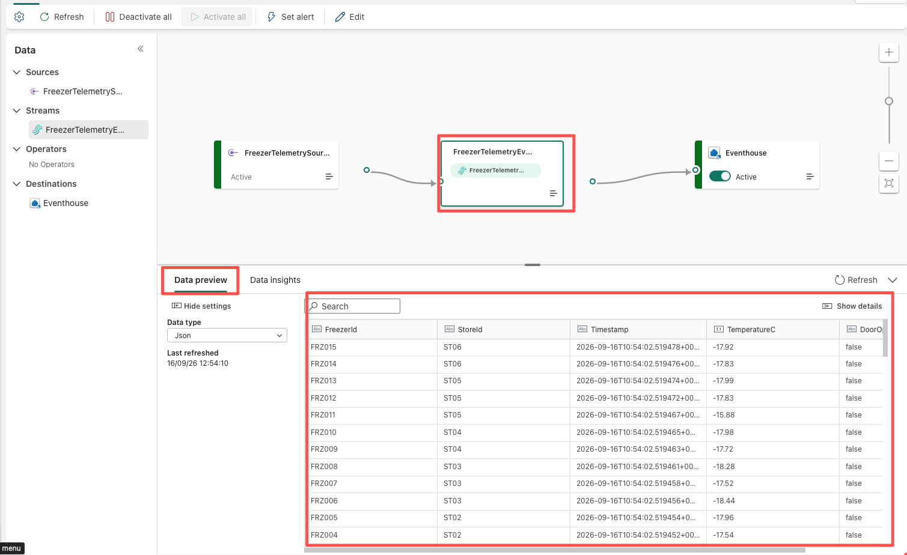
Live view of FreezerTelemetryEventstream
Fabric IQ Workshop · Module 10 — Telemetry & Grounding
23
Topic 4
This module's real deliverable: clean, joinable data on both sides.
Fabric IQ Workshop · Module 10 — Telemetry & Grounding
24
Topic 4
Runs on ingest, per event
Transforms Raw → Enriched automatically as data arrives
Good for: cleaning, reshaping, deriving fields continuously
Maintains a pre-aggregated, always-fresh summary
Good for: "current state per freezer," rollups, dashboards
Avoids re-scanning the whole raw table every query
Adapted from: Kusto update-policy docs, materialized-view use cases.
Fabric IQ Workshop · Module 10 — Telemetry & Grounding
25
Topic 4
FreezerTelemetryRaw
update policy
FreezerTelemetryEnriched
This is the plumbing. The ontology in Module 11 is what gives it business meaning.
Fabric IQ Workshop · Module 10 — Telemetry & Grounding
26
Topic 4 · Example
FreezerTelemetryRaw
{ "sensorId": "FZ-118-T1", "ts": "...", "rawC": -9.2, "doorCode": 1 }
update policy
FreezerTelemetryEnriched
{ "FreezerID": "FZ-118", "TemperatureC": -9.2, "DoorOpen": true, "ts": "..." }
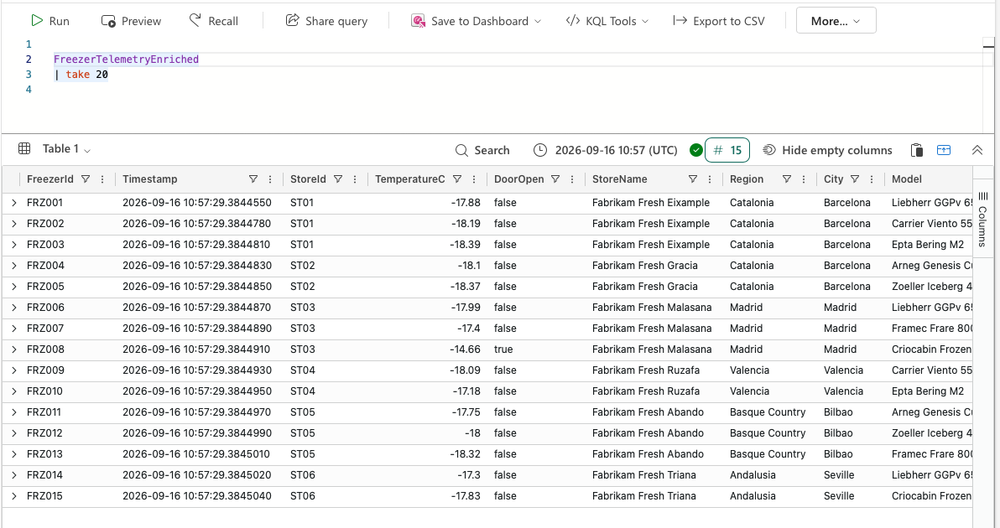
FreezerTelemetryEnriched, keyed by FreezerId and already carrying StoreName, Region, City
Same event, now keyed by FreezerID — ready to be bound to a Freezer entity in Module 11.
Fabric IQ Workshop · Module 10 — Telemetry & Grounding
27
Topic 4
Static context landed in ColdChainLakehouse (Customers, Stores, Freezers)
Live telemetry cleaned and keyed in ColdChainEventhouse (FreezerTelemetryEnriched)
Both sides share consistent FreezerID / StoreID / CustomerID keys
Next: bind them together in a queryable ontology graph
Fabric IQ Workshop · Module 10 — Telemetry & Grounding
28
Hands-on lab
25 minutes
Fabric IQ Workshop · Module 10 — Telemetry & Grounding
29
Module 11 · Topic 5 — the core of this workshop
15 min theory · 30 min lab
By the end of this module you can
Fabric IQ Workshop · Module 11 — Ontology Design
31
Topic 5
A business-language model of the things that matter: Customers, Stores, Freezers. It sits above the Lakehouse and Eventhouse tables from Module 10 — it doesn't replace them.
A kind of thing
Freezer
Not a table — a business concept that may be bound to one or more tables
A fact about that thing
TemperatureC, Model
Bound to a source column — the ontology stores the mapping, not the value
How entity types connect
Store → has → Freezer
Named and directional — makes the graph traversable
Topic 5 · Property
Rarely changes
Freezer.Model · Freezer.Capacity · Freezer.InstallDate
Source: Lakehouse
Changes continuously
Freezer.TemperatureC · Freezer.DoorOpen
Source: Eventhouse
Properties are bound to source columns — the ontology stores the mapping, not the value.
Fabric IQ Workshop · Module 11 — Ontology Design
32
Topic 5 · Relationship
Store → has → Freezer
Customer → shops at → Store
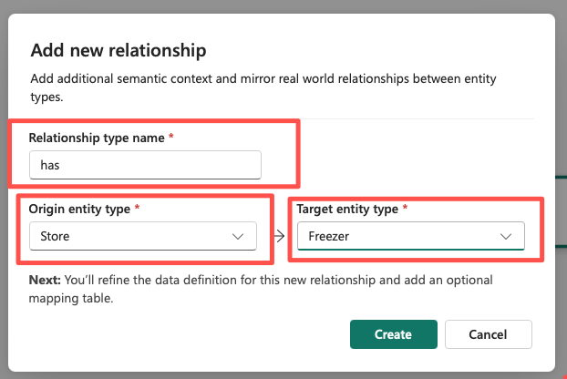
Creating Store —has→ Freezer in the ontology designer
Fabric IQ Workshop · Module 11 — Ontology Design
33
Topic 5
This is the payoff of Module 10's work: because both sides already share clean keys, binding is just a few clicks.
Fabric IQ Workshop · Module 11 — Ontology Design
34
Topic 5
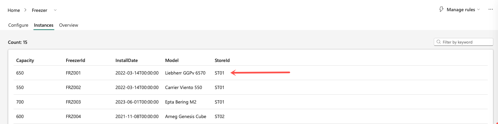
Freezer instances resolved through the ontology
Fabric IQ Workshop · Module 11 — Ontology Design
35
Topic 5 · Worked example
entity type
shops at
entity type
has
entity type
Model · Capacity · InstallDate
TemperatureC · DoorOpen
This is the graph our agents will reason over in Module 12. Every node is traceable back to a real table — nothing here is duplicated data.
Fabric IQ Workshop · Module 11 — Ontology Design
36
Topic 5
ColdChainLakehouse.Freezers
Model · Capacity · InstallDate
ColdChainEventhouse.FreezerTelemetryEnriched
TemperatureC · DoorOpen
One entity, two speeds of truth. Nameplate specs and live telemetry, on the same node in the graph.
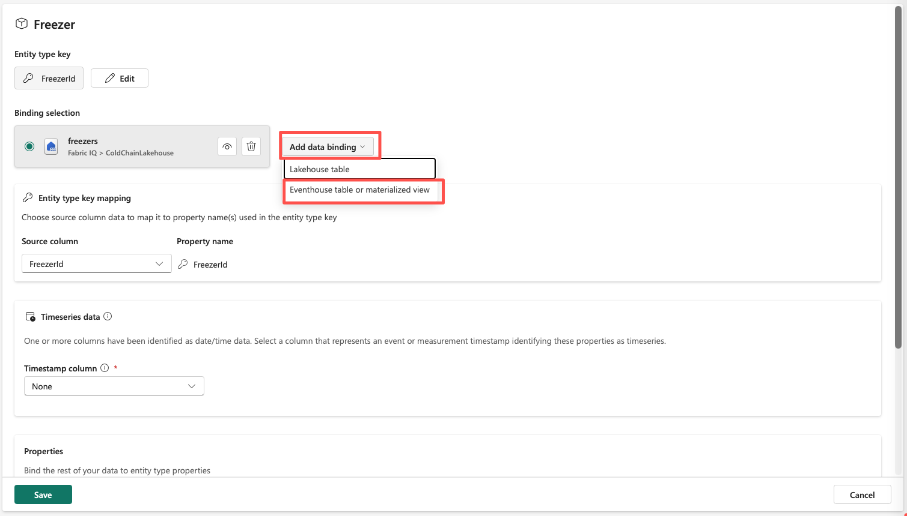
Adding the second, Eventhouse binding to Freezer
Fabric IQ Workshop · Module 11 — Ontology Design
37
Topic 5
Entity types around what the business talks about, not around whatever tables happen to exist
Directional and named — "has" and "shops at" read like a sentence, not a foreign key
Don't drag in every column just because it's there
A good ontology answers "which freezers does this customer's usual store have?" by construction
Fabric IQ Workshop · Module 11 — Ontology Design
38
Hands-on lab
30 minutes
Fabric IQ Workshop · Module 11 — Ontology Design
39
Module 12 · Topic 6
15 min theory · 20 min lab
By the end of this module you can
Topic 6
Fabric IQ Workshop · Module 12 — Agent Patterns
41
Topic 6
| Pattern | Grounding style | Best for |
|---|---|---|
| Fabric Data Agent | Q&A over the ontology graph | Ask-a-question, exploratory analysis |
| Operations Agent | Event-triggered, paired with rules | React to conditions as they happen |
| Foundry IQ | Ontology as a tool for custom AI apps | Bespoke agentic apps in Azure AI Foundry |
| Copilot Studio MCP connector | Ontology exposed via MCP | Grounding agents built outside Fabric entirely |
Fabric IQ Workshop · Module 12 — Agent Patterns
42
Pattern 1 · Fabric Data Agent
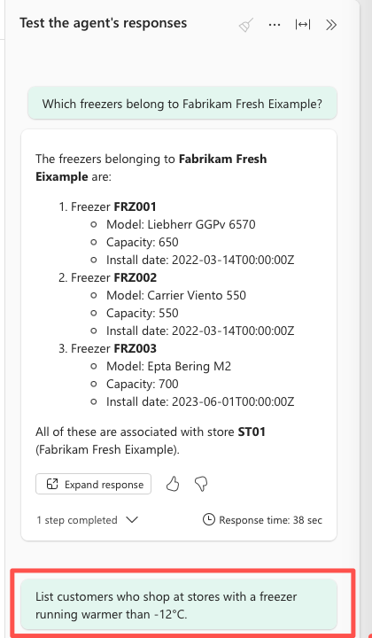
No joins written — the agent walked the relationship
Fabric IQ Workshop · Module 12 — Agent Patterns
43
Pattern 2 · Operations Agent
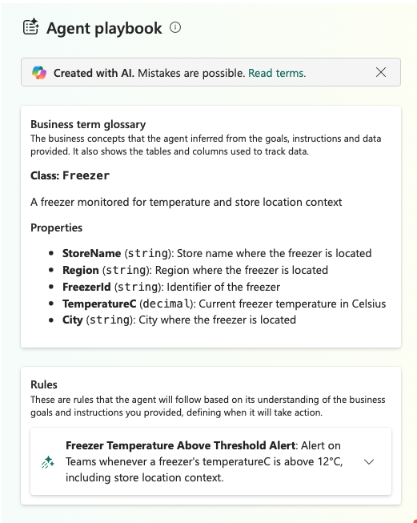
The generated playbook speaks in entity terms, not table columns
Fabric IQ Workshop · Module 12 — Agent Patterns
44
Topic 6
Threshold on a raw column
"Alert if TemperatureC > -12"
No idea what entity, store, or customer is involved
Threshold on an entity's property
"Alert if this Freezer is running warm"
Carries the whole graph context: which Store, which Customer base
Same math, radically different output — one gives you a number, the other gives you a business incident.
Fabric IQ Workshop · Module 12 — Agent Patterns
45
Topic 6 · Case study
1
FreezerTelemetryEnriched.TemperatureC climbs above ≈ -12°C and stays there
2
The Activator Ontology Rule evaluates this against the Freezer entity, not a raw column
3
Rule fires → ColdChainOperationsAgent is notified
4
Agent has full graph context: this Freezer, its Store, its Model/Capacity/InstallDate
5
Agent acts or notifies in business language: "Freezer FZ-118 at Nørrebro is running warm — check the door or compressor"
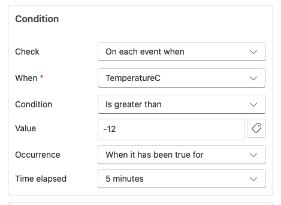
The rule: greater than -12, sustained for 5 minutes
Fabric IQ Workshop · Module 12 — Agent Patterns
46
Patterns 3 & 4
Exposes the ontology as a grounding source for custom agentic applications built in Azure AI Foundry
Use when you need an agent experience beyond what Fabric's built-in Data/Operations Agents offer
Same underlying graph, same trust guarantees — different build surface
Fabric IQ exposes the ontology via MCP (Model Context Protocol)
An agent built entirely outside Fabric — e.g. in Copilot Studio — grounds its answers in ColdChainOntology
The ontology becomes a reusable grounding source across your whole agent estate
Fabric IQ Workshop · Module 12 — Agent Patterns
47
Topic 6
| If you need… | Reach for |
|---|---|
| Ad-hoc Q&A over the graph | Data Agent |
| To react automatically when something changes | Operations Agent + Ontology Rule |
| A custom AI app in Foundry | Foundry IQ |
| To ground an agent that lives outside Fabric | Copilot Studio MCP connector |
All four read from the same ontology — no duplicated modeling effort.
Fabric IQ Workshop · Module 12 — Agent Patterns
48
Hands-on lab
20 minutes
Fabric IQ Workshop · Module 12 — Agent Patterns
49
Module 13 · Topics 7–8
10 min theory · 5 min lab — the built-in buffer
By the end of this module you can
Topic 7
Fabric IQ Workshop · Module 13 — Prompting, Trust & Traceability
51
Topic 7
Answers from general training knowledge
No guaranteed link to your data
Can sound confident and still be wrong
No way to verify which record it "used"
Answers by traversing real entities and properties
Every fact traces to a bound column
Wrong data → wrong answer, but never a fabricated entity
Response can cite the entity/property it used
Fabric IQ Workshop · Module 13 — Prompting, Trust & Traceability
52
Topic 7
The agent can only reference entity types/properties that exist in the ontology
A good response names the entity instance behind the answer ("based on Freezer FZ-118…")
Distinguish "the graph says X" from "I'm inferring X"
If the graph doesn't have the answer, the agent should say so, not guess
Fabric IQ Workshop · Module 13 — Prompting, Trust & Traceability
53
Topic 8
An agent that can act (like ColdChainOperationsAgent) needs more than a good answer — it needs an audit trail. Three questions every stakeholder will ask after an incident:
triggered this action?
was it about?
was the decision based on?
Ontology grounding makes all three answerable by design.
Fabric IQ Workshop · Module 13 — Prompting, Trust & Traceability
54
Topic 8 · Case study
FreezerTelemetryEnriched.TemperatureC crosses ~-12°C, sustained
Activator Ontology Rule "Freezer running warm" fires
bound to entity: Freezer FZ-118, via ColdChainOntology
ColdChainOperationsAgent notified / acts
Audit trail: rule name, entity instance, triggering readings, Store + Customer context — all traceable, end to end
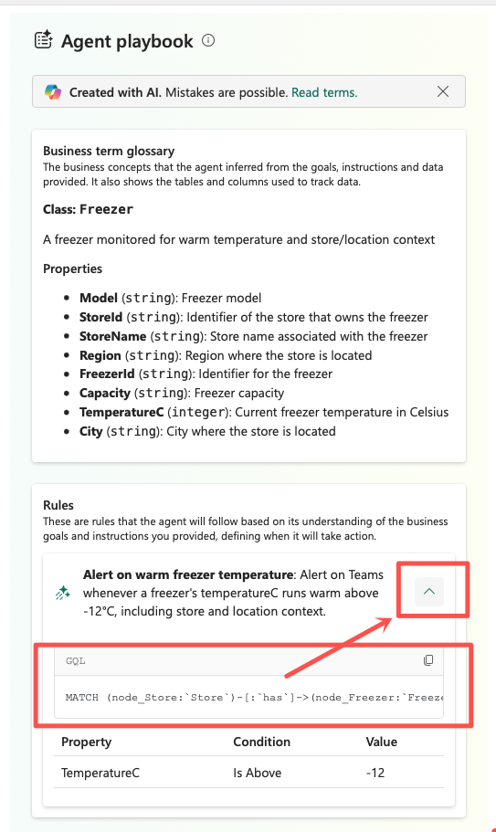
The rule's actual GQL condition, inspected
Fabric IQ Workshop · Module 13 — Prompting, Trust & Traceability
55
Topic 8
This is the difference between an agent you monitor and one you rely on.
Fabric IQ Workshop · Module 13 — Prompting, Trust & Traceability
56
Topics 7–8
prevents the agent from saying something false
lets you prove why it said or did something true
Fabric IQ Workshop · Module 13 — Prompting, Trust & Traceability
57
Hands-on lab
5 minutes
Fabric IQ Workshop · Module 13 — Prompting, Trust & Traceability
58
Module 14
10 min · recap, resources, next steps
By the end of this module you can
Module 14
Lakehouse
Customers · Stores · Freezers
Eventhouse
ColdChainKQLDB: FreezerTelemetryRaw → FreezerTelemetryEnriched
Eventstream
Live simulated freezer readings
Ontology
Customer —shops at→ Store —has→ Freezer (static + live bound)
Data agent
Grounded in ColdChainOntology
Operations agent
+ "Freezer running warm" rule
All inside one workspace: Fabric IQ
Fabric IQ Workshop · Module 14 — Wrap-up
60
Module 14
1
Module 09 — a raw reading means nothing without context
2
Module 10 — prepared static context and live telemetry to be groundable
3
Module 11 — built the ontology that gives every reading a business meaning
4
Module 12 — put agents on top that reason and act in business language
5
Module 13 — saw how grounding makes those agents trustworthy and auditable
Same idea, four different layers: workspace → data → ontology → agents.
Fabric IQ Workshop · Module 14 — Wrap-up
61
Module 14
Fabric IQ Workshop · Module 14 — Wrap-up
62
Module 14
In your own tenant — the modules/ folder is yours to keep
Add a new entity type (e.g. MaintenanceTicket) to ColdChainOntology as a self-study exercise
Try the Copilot Studio MCP connector against your ontology
If you're already building custom agentic apps in Azure AI Foundry
Fabric IQ Workshop · Module 14 — Wrap-up
63
Module 14
Fabric IQ Workshop · Module 14 — Wrap-up
64
Questions, feedback, and freezer-alert war stories always welcome.